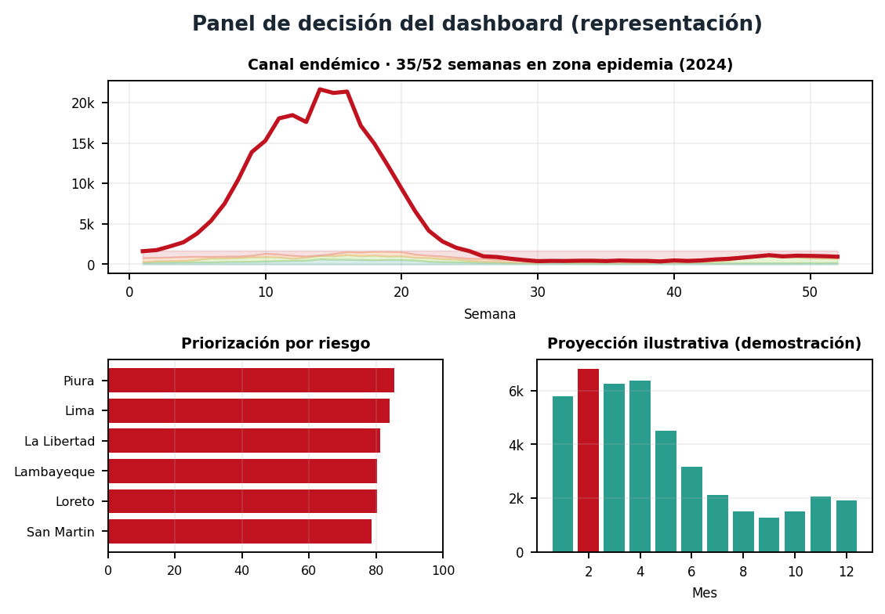
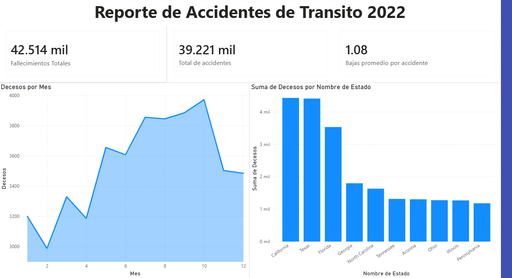
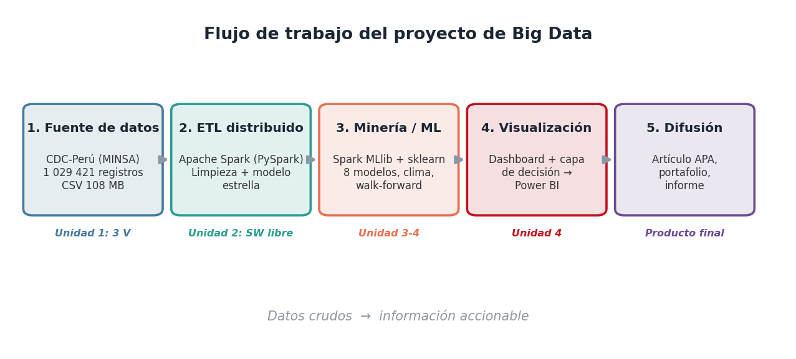

Proyectos de procesamiento, análisis y visualización de datos a gran escala: desde un pipeline completo con Apache Spark sobre un millón de registros, hasta tableros interactivos en Power BI. Un recorrido por el ciclo de vida del dato, del ETL a la decisión.
Jesus Abel Figueroa Valencia · Estudiante de Ingeniería de Sistemas (VII ciclo) · UNDC
Dos trabajos que cubren el ciclo completo del dato: un proyecto de Big Data de extremo a extremo y un tablero analítico en Power BI.
Pipeline de extremo a extremo sobre 1 029 421 notificaciones reales de dengue del CDC-Perú: ETL distribuido con Apache Spark, modelo dimensional, comparación de 8 modelos de pronóstico con integración de datos climáticos de NASA POWER, y un tablero con capa de decisión (canal endémico, priorización y recomendaciones). Desarrollado como demostración metodológica sobre datos históricos.

Tablero analítico construido en Power BI sobre un conjunto de datos de accidentes de tránsito de Estados Unidos en 2022. Incluye limpieza y transformación con Power Query, indicadores clave (fallecimientos, total de accidentes, bajas promedio) y visualizaciones de decesos por mes y por estado.

Jesus Abel Figueroa Valencia
Estudiante de Ingeniería de Sistemas · VII ciclo · Universidad Nacional de Cañete (UNDC)
Estudiante de Ingeniería de Sistemas con interés en el análisis y el procesamiento de datos. Los trabajos de este portafolio, desarrollados en el curso de Big Data, reflejan mi aprendizaje en el manejo de datos a gran escala: desde la limpieza y transformación hasta la visualización orientada a la toma de decisiones. Sigo en formación y busco mejorar de forma continua en las herramientas del análisis de datos.
Habilidades y herramientas
